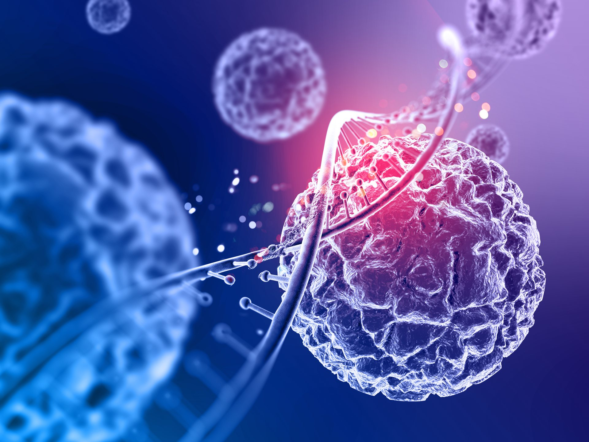

Мишень
РНК вируса
новое поколение в молекулярной диагностике РНК-вирусов
Разрабатываем технологическую платформу для создания молекулярных тест-систем на основе белка Cas13a.

Первый объект разработки: возбудитель геморрагической лихорадки с почечным синдромом (ГЛПС).
В основе подхода лежит специфическое распознавание вирусной РНК системой CRISPR-Cas13a. Результат регистрируется колориметрическим методом.
РНК вируса
CRISPR-Cas13a
Колориметрический сигнал
Молекулярное обнаружение вирусной РНК играет важную роль в диагностике инфекционных заболеваний. На практике выбор метода зависит не только от аналитических характеристик, но и от:
ПЦР и другие методы анализа являются важными инструментами молекулярной диагностики.
Однако в зависимости от сценария применения может возникать потребность в альтернативных или дополнительных технологиях, способных использовать:
CRISPR-Cas13a — система, способная распознавать определенные последовательности РНК с помощью направляющей РНК (crRNA).
crRNA распознает вирусную последовательность.
Распознавание активирует белок Cas13a.
Cas13a расщепляет репортерную молекулу, и формируется колориметрический сигнал.
CRISPR-технологии возникли не как готовый инструмент диагностики. Их основа была сформирована исследованиями естественных защитных систем бактерий — механизмов, которые позволяют микроорганизмам распознавать чужеродный генетический материал.
Одним из направлений развития этой области стало изучение CRISPR-систем, способных работать непосредственно с РНК.
Ученые описали новый белок, способный программируемо распознавать РНК с помощью гидовой РНК (crRNA).
Следующие исследования показали, что Cas13a может использоваться не только для изучения и регуляции РНК, но и как основа для создания систем ее обнаружения. После распознавания целевой РНК активированный Cas13a способен неспецифично расщеплять молекулы РНК. Это свойство позволило превратить молекулярное распознавание в регистрируемый сигнал.
Проект создан при поддержке Федерального государственного бюджетного учреждения «Фонд содействия развитию малых форм предприятий в научно-технической сфере» в рамках программы «Студенческий стартап» федерального проекта „Платформа университетского технологического предпринимательства“.
Забор крови и центрифугирование/ отстаивание крови
Сборка тест-системы в ИФА-планшете
Распознавание гидовой РНК вирусной РНК
Неспецифическое расщепление РНК
Визуализация